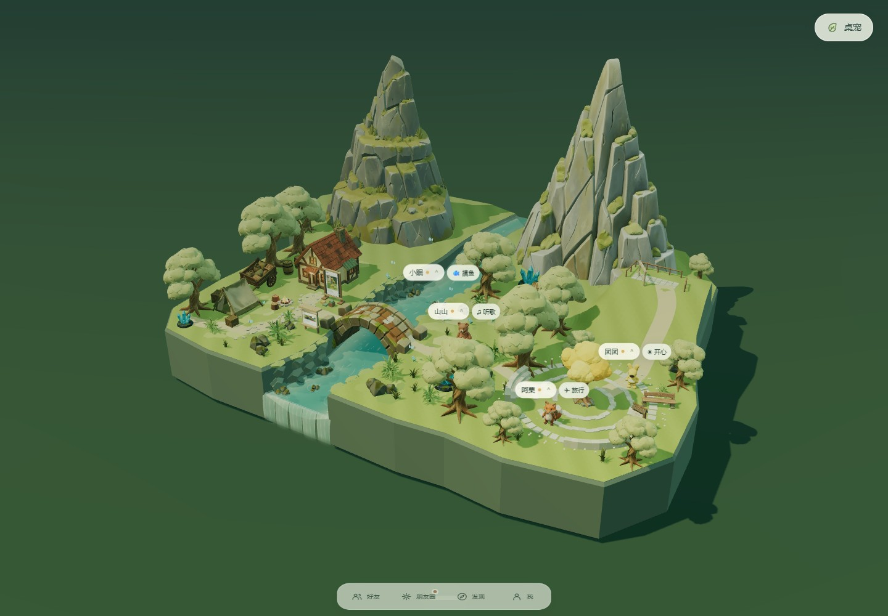
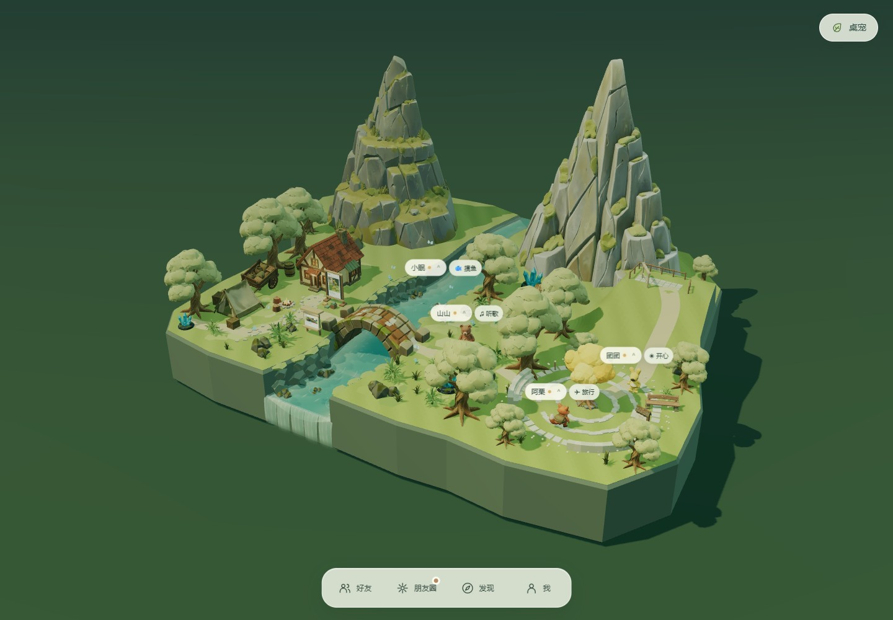
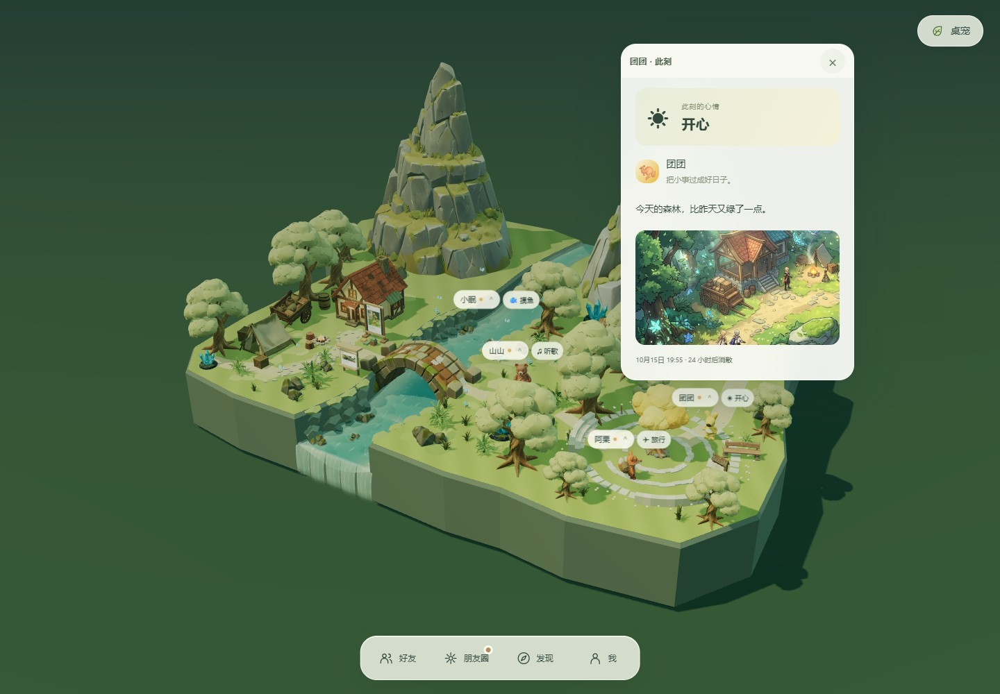
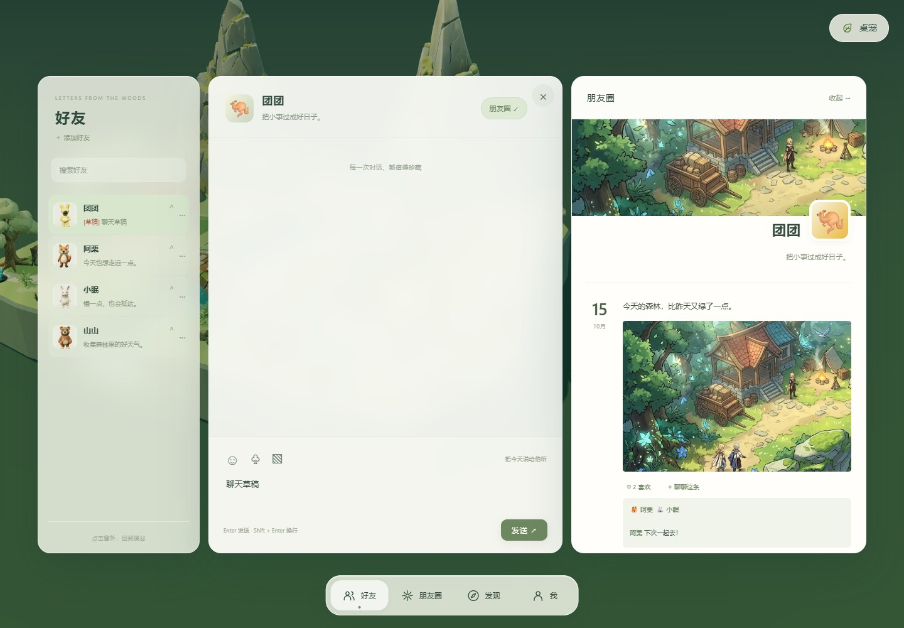
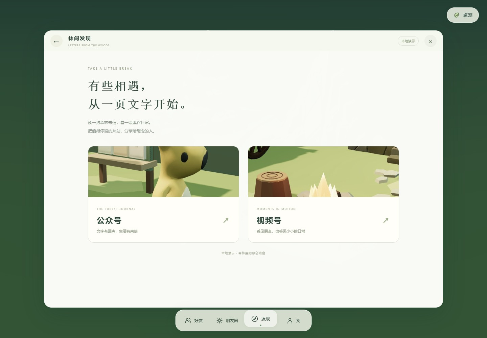
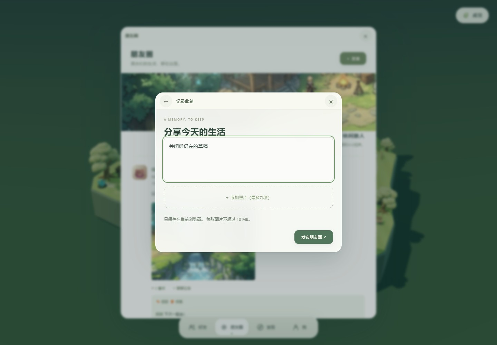
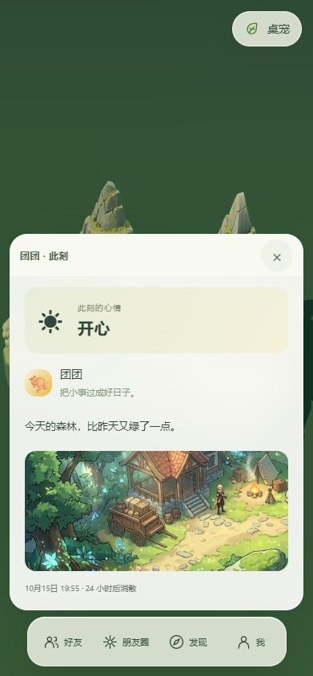
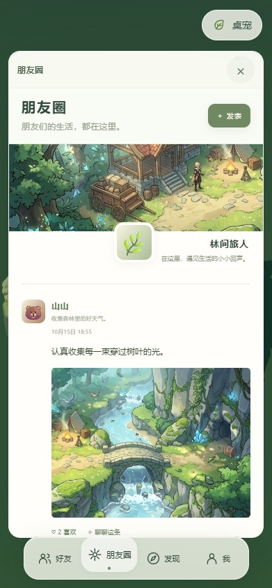
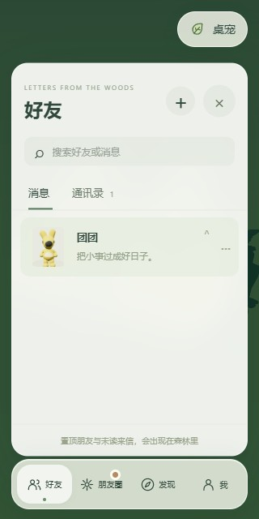

LETTERS FROM THE WOODS安静收起，自然展开。
保留森林的温度，让操作拥有明确的来处与归处。底部 Dock、人物状态、主工作区与发布分享子层使用同一套交互节奏。
打开主应用 · 实现与验收对应
18
新增交互与边界检查组通过
16.8 ms
前后连续操作 P95 帧间隔均相同
0
测试页面脚本错误 · 连续操作后运行中动画
交互演示
桌面：场景与功能之间

待机：保留一条轻巧的唤出胶囊。

操作：四个入口与未读提示清晰可见。

人物状态：保留森林背景与人物所在位置。

聊天：好友、对话与个人朋友圈自然展开。

发现：与其他主工作区共享窗口语言。

发布：独立子层，返回后原内容仍在。
手机：适配触摸与窄屏

底部状态卡
朋友圈与 Dock
320px 窄屏验证记录
11 组主要交互 · 7 组边界与触摸 · 连续操作前后对比 · 发现回归 · 场景转场 · 广场回归